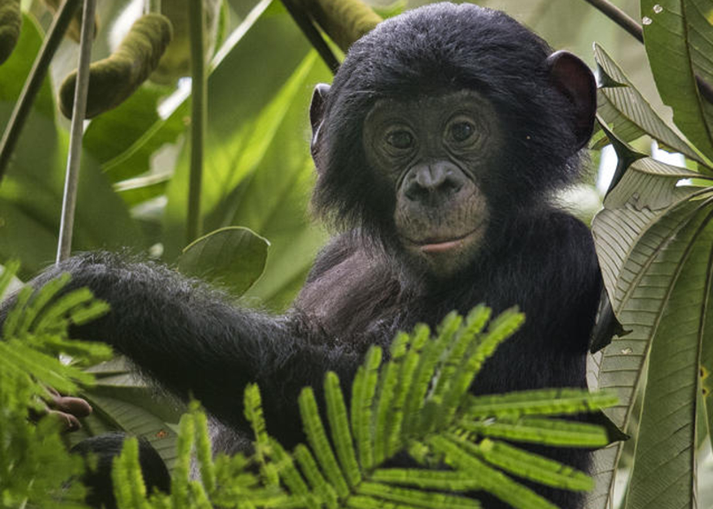
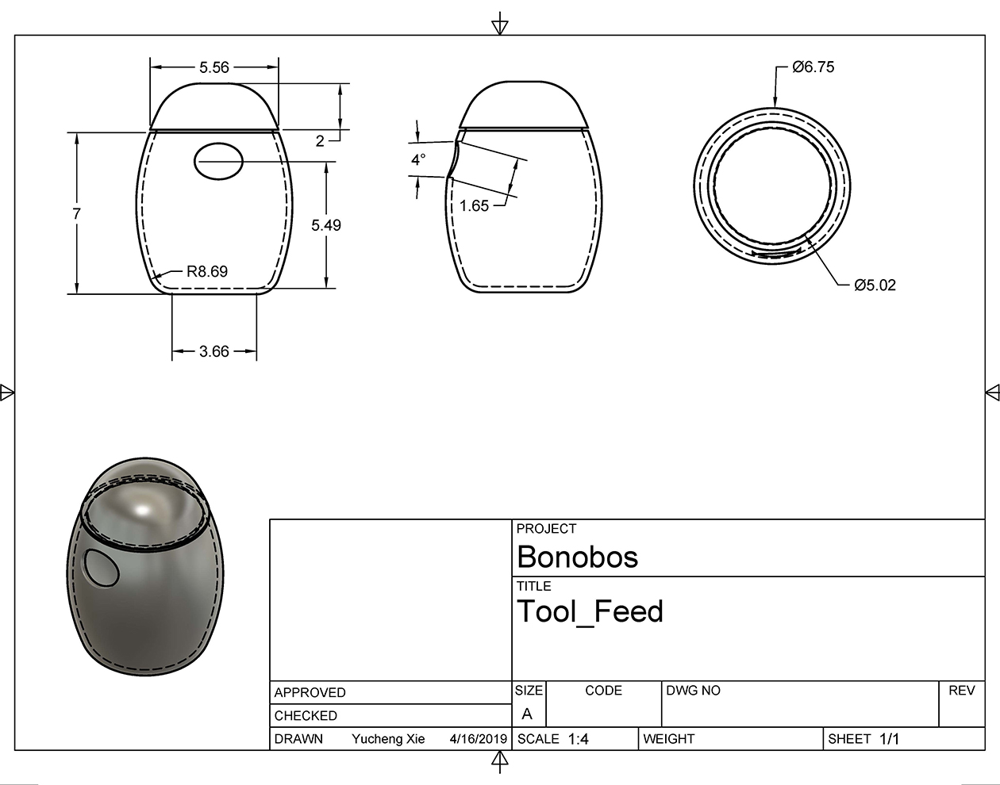

Week 11
Understanding the Bonobos

What Do They Need
While extending my research on the Bonobos past week, I continueously getting masmorized by thier intellectual ability and fasinated by many experiements that can help us further understanding them and even with that to further understand ourselfves. However, I did come to the realization that what's more important is thier preservation and how to improve thier lives in capatiivies and protect them.
While my last prototype highly focused on the Bonobo'' facial recognition ability and how they are capable of understanding facial expression, I do think the design and the end-product does not seem to serve them as much as I would like to. I decided then to take a different approach on how to improve their living exprience in captivity.
The Bonobos specifically dwell in the tropical forests of the Congo Basin south of the Congo River, and are only found in that region. Most of thier habitat destructions are resulted from slash-and-burn subsistence agriculture, which is most intense where human densities are highest and growing. In addition, based on Bonobos' size and thier mobolity on lands and tree, there are few natural predators. Most of thier endangerment are coming from Human. With thier long interbirth interval (various from 4.5 - 8 years), and later maturity (13-15 years), poaching is the number one threat to the bonobos.
Learning About the Bonobos
Other than thier amazing abilities on facial recognition mentioned previously, bonobos are also special in many ways. They rarely show aggressionm, rather, they would solve conflicts with intimate physical interaction. Both male and female will engage in same sex non reproductive sexual behaviour as reconciliation to reduce tention. Other than thier fasinating and sometime "over-analyzed" sexual behabiour bonobos are also engaged in behaviours such as voluntary food sharing and using tools for hunting.
More on Thier Lives in Captivity
Studies has shown, that there are some behaviours that haven't been seen as much in the wild, such as hair plick. The scientist found that bonobos tend to groom more while indoors, and the hair plunking behabior also increased during indoor hours. They have not observed any wild-born individual perform plunking before. While being housed with other bonobos who frequently hair pluck, they are still raraly the recipient of the plunking. This might suggest early exposure and observation of hair plucking, or the lack thereof, influences the development of the behavior. Yet there no conlusion on how this behabior is developed or what impacts it has on the bonobos
Since there are only 7 insititutions in the States with bonobo exihibit, it is hard for be to observe them in person. However, I was lucky enough to found this footage of three bonobos at San Deisgo Zoo. In this footage we can also witness the grooming behaviour presents between two of the bonobos. During this 18 minute long video, there seems to be not much going on. That's because bonobos spend about 43% of their time resting and rest devided in foraging, feeding and traveling. However, while in captivity, bonobos spend less time one traveling and foraging.
"Fun" for a Reason
Previously I was looking into too much "what can they do", rather than "what they need". Based on the reasearches I've done this week and my newly adjusted perpectives and goals, my new approach is to created the "exprience" of foraging and hunting for the bonobos in captiovity.
Stage One
At Stage One, I designed a food container that would require the bonobos using tools to get the food content inside. Based on the various reaserch and observations done in the past, I am fairly confident that the bonobos are motiveated enough to engage and soon figure out how to get the content out of the container. At the stage one, this device isn't too out of reach of thier ability and the amount of effort it requires is a bit higher yet similar to what they would do while foraging.
The exterior of the device is currently designed to have adequite amount of similariity to friuts but not enough for them to mistake the device. Although in past experiemnts, bonobos has shown few difficulties with interacting novel objects. The devices will be spread out in their space of living. Idealy this will require both arboreal terrestrial locomotion in terms of reaching the devices.
However, this device will not solely replace feeding from the Zoos or Sactuaries. While the feeding from the insituation can be seen as the "fallback" food, even though the nutrition value won't be as low as they would've have encountered in the wild, it does help them practice thier survival skills as in balancing fallback food and staple food. Especially they will less likely run into situation where preferred food is in scarce. Studies has shown that the importance of fallback food and how it help the bonobos subsist at high densities and to maintain cohesive groups.
Future Stages in development
In addition, I am currently working on a "floor plan" that can encourages the bonobos to engage more with arobreal locomotion. One study has shown that during capativity the bonobos has shown increasing engagement with terrestrial locomotion, expecially with biped. On top of this, I would also love to tap into thier voluntary food sharing behaviour at further stages.
[Click Here to View Full Research Paper] [Click Here to View Full Research Paper] [Click Here to View Full Research Paper]
[Click Here to View Full Research Paper] [Click Here to View Full Research Paper] [Click Here to View Full Research Paper]
[Click Here to View Full Research Paper] [Click Here to View Full Research Paper] [Click Here to View Full Research Paper]
[Click Here to View Full Research Paper] [Click Here to View Full Research Paper] [Click Here to View Full Research Paper]